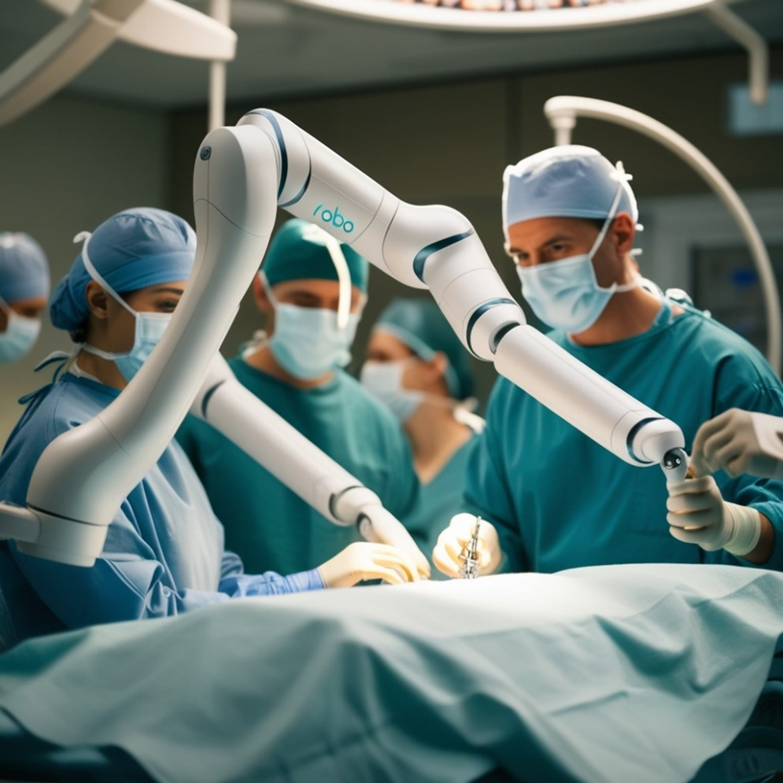

How the Internet of Things (IoT) is Shaping a Sustainable Future
What is IoT?
Internet of Things (IoT) refers to the connection of everyday devices and objects to the internet, allowing them to communicate, share data, and operate more efficiently. From sensors in factories to smart home appliances, IoT is becoming a common part of daily life. But the power of IoT goes beyond convenience. By connecting machines, systems, and environments, this technology helps solve complex problems, such as optimizing resource usage and improving urban living conditions.
IoT in Medicine
The transition of the Internet of Things (IoT) into medicine occurred gradually and was driven by technological advances, with the primary goal of improving the efficiency of medical care, diagnostic accuracy, and personalized patient treatment. Initially, medical devices operated in isolation, with little connectivity. However, as communication technology advanced and networks became faster and more stable, IoT began integrating medical devices, hospital equipment, and patient data in real-time.
The initial use of IoT in medicine primarily focused on enhancing data collection and integrating it with electronic medical records. This enabled doctors to access patient information more quickly and share it with other professionals, optimizing diagnoses and treatments. The ability to connect sensors, diagnostic machines, and even implantable devices directly to hospital systems opened the door to a new era of connected healthcare.]
This transition gained momentum with the introduction of miniaturized sensors, advancements in wireless communication, and data analysis, allowing medical devices to become "smart" and connected. With the connectivity offered by IoT, surgeries became more precise, utilizing robotic technologies that depend on real-time networks to monitor the patient's condition during the procedure. These advancements allowed IoT to be incorporated not only into monitoring tools but also into advanced surgical equipment, such as surgical robots and holographic visualization devices.
The evolution of IoT in medicine was driven by the desire to reduce medical errors, improve the quality of care, and optimize efficiency in hospitals.
Robotic Surgeries
The introduction of robots in surgeries is another revolutionary advancement. Systems like the da Vinci Surgical System allow surgeons to perform operations with much greater precision, minimizing invasive cuts. These robots are controlled by doctors who guide the robotic arms, ensuring that error margins are significantly reduced and patient recovery times are shorter. IoT complements this technology by providing real-time data integration during surgery, such as vital signs monitoring and continuous feedback.

IoT and Health: Promoting Sustainability

1. Reduction of Travel
automatically sent to physicians, reducing travel and lowering carbon emissions.
2. Energy Savings
Smart hospitals use sensors to adjust lighting and temperature based on need. In an empty operating room, energy is automatically conserved,reducing consumption and promoting energy efficiency.
3. Reduced Material Waste
IoT sensors monitor the stock and validity of medications, preventing the waste of supplies like vaccines. During the Covid-19 pandemic,for example, smart refrigerators ensured that vaccines such as Pfizer's were stored at the correct temperatures, between -80°C and -70°C,
avoiding losses and ensuring the doses' effectiveness during transport.
and reduced material waste. These innovations not only improve the efficiency of healthcare services but also contribute to
environmental sustainability, benefiting both healthcare professionals and patients.